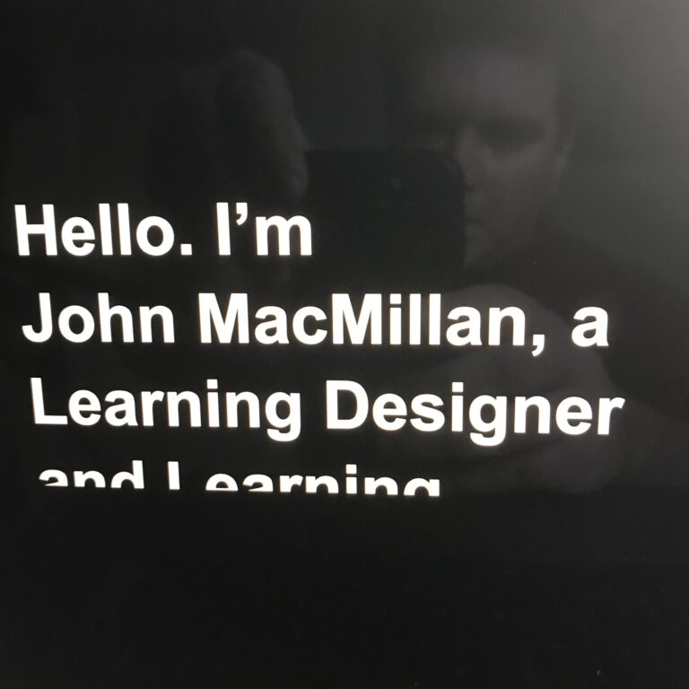

Prompting
With everything that is going on right now, video creation has become more important for many of us. Most of my video experience has been behind the camera or the editing desk, but that has had to change. I have always felt quite comfortable shooting and editing video, but I hate being in front of the camera.
After years of experience in distributed teams I am used to being on camera in meetings and webinars, but recorded videos are a different beast.
As one of the tutors on our Supporting Online Learning and Teaching module I had to overcome my apprehension about being filmed. We needed content and creating videos was a key activity in the module.
One of the things I had to do to get comfortable with filming on camera was write a script and stick to it. Even for a short announcement video I script it. If I record a video without a script I am likely to ramble or miss a key point. For educational videos I would always recommend a rigorous scripting process, and this is advice I follow for all of my videos.
When we record in our media studio we have a full teleprompter set up, but this isn’t available to me while working from home. I had heard about some online prompters so I decided to try CuePrompter. After a couple of test runs I was able to get some videos created quickly and I stuck to my script. At first it was a bit intimidating, but it actually turned out to be simpler than other methods. A couple of test runs helped me establish what speed I should set the prompter at, and it also helped me to figure out that adding some blank lines at the start helped me start the prompter and then the recording.

I was able to position the prompter just below my webcam. This meant that even though my eyeline wasn’t quite correct, it was close and it was relatively consistent. Eyeline and where to look has been a common question in our online module, and without a full prompter set up I think the browser prompter is the best I will be able to do.
I’m still not comfortable reviewing or editing my videos, but at least I now feel that I can create videos for myself quite quickly. Getting this far with recording was a big step, I’ll begin working towards editing my own content soon.